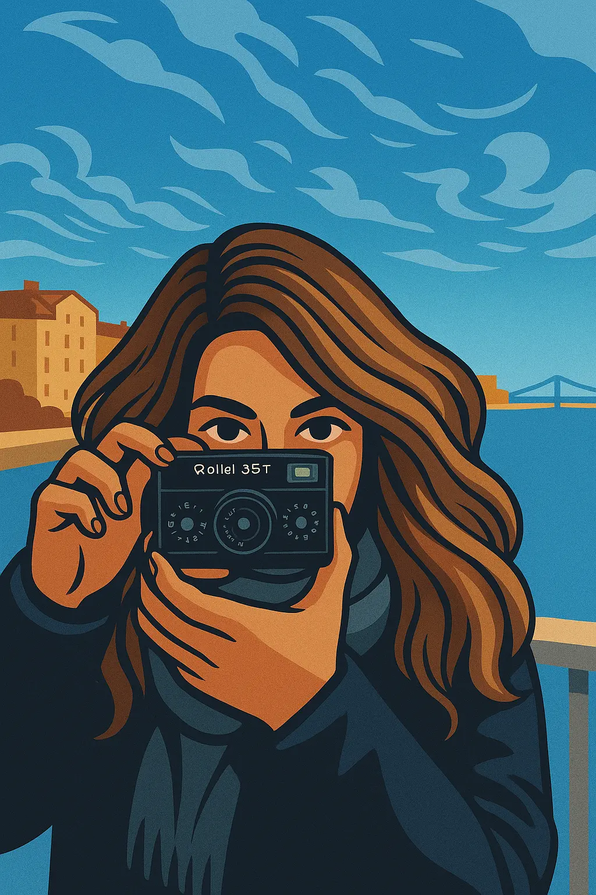
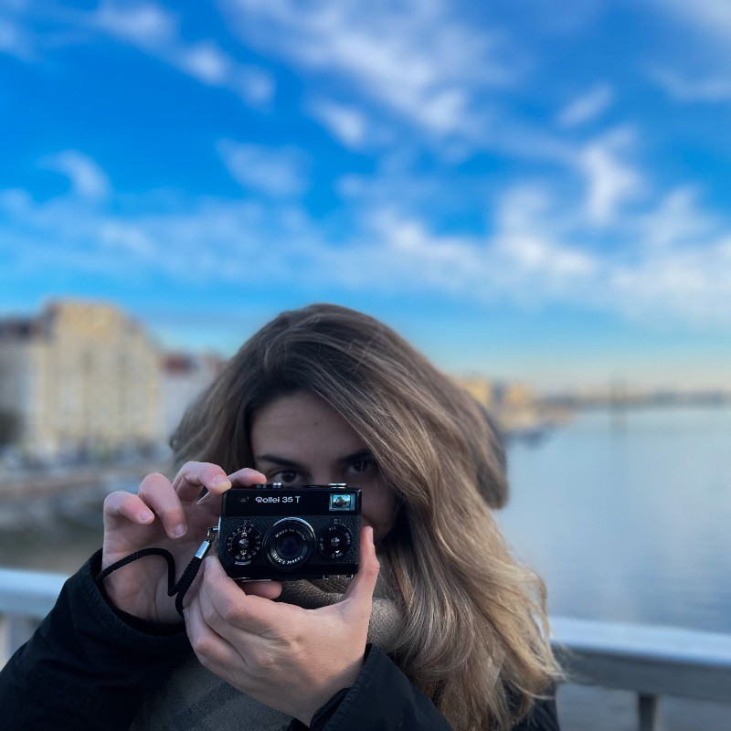

Ciao, sono Alice!
Digital
designer
Disegno marchi, interfacce e video per brand, aziende e produzioni tv e cinema. E ogni settimana racconto il design su My Secret Design.

Progetti
scegli e clicca
la mia pagina Instagram
My Secret Design
Racconto il design a chi lo fa di mestiere: tool, libri e storia della grafica italiana, in reel e caroselli che ideo, scrivo e monto io.
È nata per mettermi in gioco e sperimentare nuove tecniche di comunicazione: video, montaggio, ideazione e ricerca.
Per collaborazioni: mysecretdesign25@gmail.com
- 4.700+
- follower su Instagram
- 125 mila+
- visualizzazioni al mese
- 116 mila
- visualizzazioni per il reel più visto
I reel più visti
clicca per guardarli
Cosa trovi sulla pagina
- La storia della grafica italiana, a puntate
- I libri di design che vale la pena leggere
- Tool e risorse per designer e freelance
- I concorsi di design del mese

Chi sono
Sono una digital designer e video editor con esperienza in branding, comunicazione visiva e progetti digitali.
Dopo il diploma in grafica all'International School of Comics e il master in UX/UI di Start2Impact University, ho sviluppato un approccio al design orientato alla coerenza del brand e all'esperienza dell'utente. Nel 2025 sono stata finalista al concorso "Talenti Accesi" di Torcha con il restyling della lattina BOEM.
Ho lavorato anche per il cinema e la tv, collaborando a produzioni internazionali. In parallelo gestisco My Secret Design, la mia pagina dedicata al design, dove curo ideazione, riprese e montaggio dei contenuti.
Design
- Brand identity
- Graphic design
- Editorial design
- Package design
- Copywriting
UX/UI
- UX research
- Accessibilità
- Wireframing
- Prototipazione
- UI design
Video e social
- Riprese con attrezzatura propria
- Video editing
- Reel e caroselli
- Piano editoriale
Strumenti
- Adobe Creative Suite
- Figma, Sketch, Miro
- CapCut, Edits
- Basi di HTML, CSS, JavaScript
Alice Martinazzoli
Digital designer
alicemartinazzoli95@icloud.com | +39 346 1732527 | alice230295.github.io/Portfolio_Designer | Instagram @my.secret.design
Esperienza
Si apre la finestra di stampa: scegli "Salva come PDF".
Lavoro
-
Da dicembre 2026
Video e contenuti social
Collaborazione con una designer
Riprese, editing video e creazione di caroselli, con attrezzatura propria.
-
Novembre 2026 – oggi
Digital designer
Blum, agenzia di comunicazione dell'innovazione
Collaborazione continuativa da remoto.
-
Maggio 2026 – oggi
Video editor
StandUp Way
Montaggio di video e contenuti short-form per social e YouTube, con attenzione a engagement, retention e impatto visivo.
-
2026
UX/UI designer
AMA Properties
Landing page e analisi delle criticità UX del sito esistente. Definizione del piano editoriale digitale e grafiche per i canali social.
-
2023 – 2024
Graphic designer
LGA Service, Roma
Materiali di marketing, presentazioni e comunicazione visiva, per un'immagine aziendale più coerente e attuale.
-
2022
Graphic designer
Panorama Films, Roma
Grafica di scena per la serie tv "Concordia" (ZDF Studios): packaging, etichette, segnaletica e grafiche per veicoli, in un team internazionale.
-
2018 – 2021
Graphic designer
MP Partners, Costa Volpino (BG)
Da junior a referente per comunicazione e marketing: campagne visive, materiali editoriali, branding e strategie di marketing.
-
2017
Social media manager
Cassette Venturi, Darfo Boario Terme (BS)
Piano editoriale, grafiche, shooting dei prodotti e gestione di Facebook e Instagram.
Formazione
-
2026
Corso di specializzazione UX/UI design
Masamune
Sei settimane intensive su ricerca utente, progettazione e prototipazione in Figma. Selezionata tra i 4 migliori partecipanti.
-
2025
Master UX/UI design
Start2Impact University
Discovery, accessibilità, wireframing e interfacce con metodo user-centered.
-
2023
Salesforce developer
Generation Italy
Corso intensivo di sviluppo su Salesforce, con focus sul back-end.
-
2019
UI design
Lacerba.io
Design visivo, tipografia, colore e interfacce responsive.
-
2015 – 2018
Diploma in grafica pubblicitaria
International School of Comics, Brescia
Grafica pubblicitaria, editoria, brand identity e packaging.
Riconoscimenti
- Finalista "Talenti Accesi" di Torcha, 2025
- Autrice del libro su Gino Zamprioli, make up artist
hai un'idea?
Parliamone
Un progetto, una collaborazione o solo una domanda: scrivimi, rispondo volentieri.
alicemartinazzoli95@icloud.com